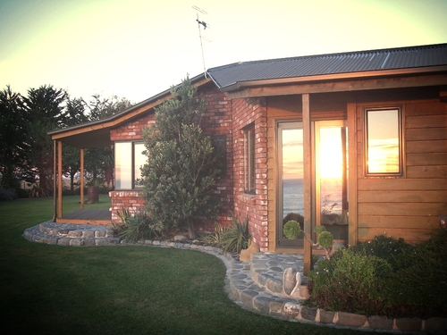
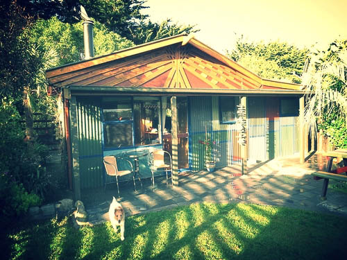

Visit our handcrafted getaway cottages by the sea.
- 12 minutes north of Kaikoura. Rural, country setting on a 5 acre property.
- Optional Continental breakfast. At your leisure, self-prepared in your room with provisions provided. No interruptions, appointments, or obligations!
- Private access torooms, with parking adjacent to each unit.
- Excellent wireless internet, with100MB free access per day (Zenbu).
- Property overlooks Pacific Ocean surfto the East, and the seaward Kaikoura Range tothe West, with excellent surfing, swimming with dolphins, and beach combing.
- Rates vary according to the season, the number of nights stayed, and the number of people. There is also a no breakfast rate option. Email us for a quote.

The Oceanview Ensuite overlooks the breaking waves. Watch moonrises, sunrises, surf breaking, and frolicking dolphins.
Learn More →

Sharkey’s Cottage is a private self-contained cottage nestled in our “front paddock," approximately two acres of garden.
Learn More →